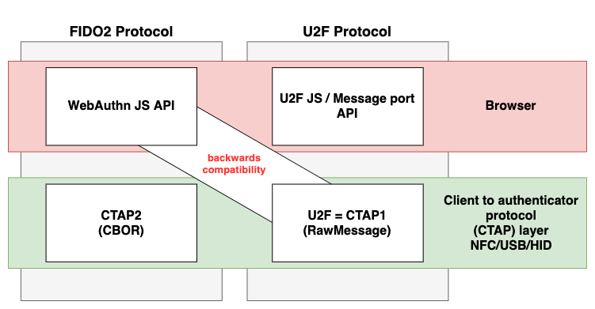
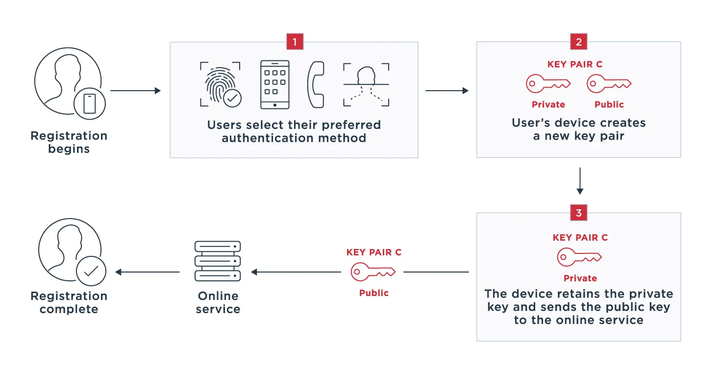
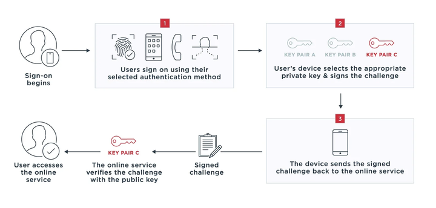
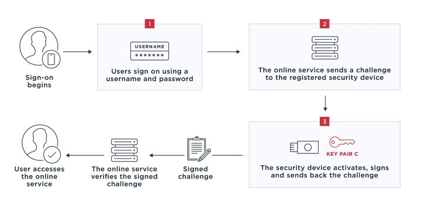
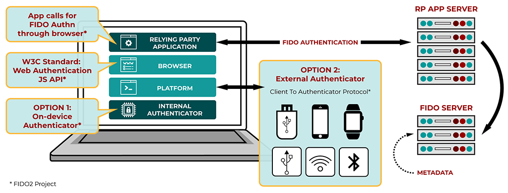

认识 FIDO
1. 背景
传统身份认证最常见的方式是口令。服务端通常不会直接保存明文口令，而是保存口令哈希；但一旦哈希库泄露，攻击者仍可能通过撞库、字典攻击、弱口令复用等方式获得账号访问能力。
生物特征本身也不适合作为可远程校验的共享秘密。指纹、人脸等生物特征一旦泄露无法像口令一样更换；现代系统通常会把生物特征模板保存在本地安全环境中，用于本地解锁或本地用户验证，而不是把原始生物特征交给业务服务端。
FIDO 要解决的核心问题是：让业务服务端不再依赖可被共享、可被重放、可被钓鱼的秘密，而是使用与站点绑定的公私钥凭证完成认证。
2. 解决思路
FIDO 使用标准公钥密码学。注册时，认证器为某个用户账号和某个在线服务生成一对密钥：
- 公钥发送并保存到服务端；
- 私钥保存在用户的认证器中，例如手机安全芯片、操作系统凭据管理器、TPM、安全密钥等；
- 指纹、人脸、PIN 等只用于本地解锁认证器或完成本地用户验证，不会发送给业务服务端；
- 后续登录时，服务端下发挑战值，认证器使用私钥签名，服务端使用注册时保存的公钥验签。
由于 FIDO 凭证会绑定到站点域名或应用标识，钓鱼站点即使诱导用户操作，也很难拿到可在真实站点重放的认证结果。
3. FIDO 联盟
FIDO 联盟是一个开放的行业协会，目标是制定身份验证标准，减少互联网服务对密码的过度依赖。
FIDO 联盟发布了三类核心用户身份验证规范：
- FIDO UAF（Universal Authentication Framework）：支持无密码体验；
- FIDO U2F（Universal Second Factor）：支持第二因素体验；
- CTAP（Client to Authenticator Protocol）：客户端与认证器之间的通信协议。
CTAP 与 W3C 的 WebAuthn 规范 共同组成 FIDO2。更准确地说，CTAP 是协议族，不等同于 CTAP2；CTAP1 是 U2F 的新名称，CTAP2 是 FIDO2 时代用于外部认证器的主要协议。

4. UAF、U2F、CTAP、FIDO2 和 Passkey 的关系
- UAF：面向无密码登录，常见体验是用户在设备本地完成指纹、人脸、PIN 等验证，服务端通过公钥验签确认用户身份。
- U2F / CTAP1：面向第二因素登录，用户仍先输入用户名和密码，再使用安全密钥等认证器完成第二因素验证。
- CTAP2：让浏览器、操作系统或平台客户端可以通过 USB、NFC、BLE 等方式与外部认证器通信，也支持更丰富的 FIDO2 能力。
- WebAuthn：W3C 标准 Web API，网站通过
navigator.credentials.create()创建凭证，通过navigator.credentials.get()发起认证。 - FIDO2：WebAuthn + CTAP，支持无密码、第二因素和多因素体验。
- Passkey（通行密钥）：基于 FIDO2/WebAuthn 的用户友好概念，通常用于无密码登录体验；很多实现会使用可发现凭证（discoverable credential），也可以是设备绑定凭证或由平台凭据管理器在同一账号生态内同步的凭证。
FIDO 用户身份验证规范
FIDO UAF
FIDO UAF 支持无密码体验。用户需要携带安装了 FIDO UAF 协议栈的设备，并选择一种本地验证机制，例如指纹、人脸、语音、PIN 等，将该设备注册到在线服务。
UAF 场景举例：手机 App 中使用指纹或人脸完成登录、支付确认等操作。这里的指纹或人脸用于本地验证用户本人，业务服务端校验的是设备私钥生成的签名。
UAF 注册过程
第一次使用时需要完成设备注册。认证器会生成针对该设备、服务和用户账户的密钥对，公钥发送到服务端保存，私钥保存在设备中。生物特征信息仅用于本地验证，不发送给服务端。

典型步骤如下：
- 用户在 App 或网页中发起注册；
- 服务端返回注册挑战值和策略，例如允许哪些认证器、是否需要用户验证；
- 设备本地完成用户验证，例如指纹、人脸或 PIN；
- 认证器生成密钥对，并对注册数据做签名或证明；
- 服务端保存公钥、凭证标识、计数器等信息。
UAF 无密码认证过程
注册后，用户再次登录时只需要完成本地验证。设备使用私钥对服务端挑战值进行签名，服务端使用保存的公钥验签。

认证过程的关键点：
- 服务端每次认证都应生成随机挑战值，避免重放攻击；
- 私钥不离开认证器；
- 本地验证通过不等于服务端认证完成，服务端仍必须验证签名、挑战值、应用标识和凭证状态。
FIDO U2F
FIDO U2F 允许在线服务为已有的用户名密码登录增加强第二因素，而不是完全取代密码登录。
U2F 的两个因子通常是：
- 用户知道的内容：用户名和密码；
- 用户持有的认证器：FIDO 安全密钥、支持安全密钥能力的手机或其他硬件认证器。
需要注意：手机身份认证 App 中的 TOTP 动态验证码属于一次性口令方案，不是 FIDO U2F。U2F 的核心是认证器中的私钥对服务端挑战值签名，服务端用注册时保存的公钥验签。
U2F 注册过程
用户完成用户名密码登录后，服务端要求绑定第二因素设备。浏览器或客户端把服务端挑战值转交给 U2F 认证器，认证器生成密钥对并返回公钥、key handle、认证器证明等数据，服务端保存这些注册信息。

U2F 认证过程
后续登录时，用户先输入用户名密码。服务端再发起 U2F 挑战，认证器要求用户触摸安全密钥、靠近 NFC 设备或完成等价的用户存在确认，然后使用私钥签名。服务端校验签名、挑战值、应用标识和签名计数器。
U2F 的安全价值在于：
- 认证结果与真实站点绑定，降低钓鱼风险；
- 私钥不可导出，攻击者拿到服务端数据库也无法直接伪造认证；
- 认证器需要用户存在确认，降低远程静默滥用风险。
FIDO2（WebAuthn + CTAP）
FIDO2 由 W3C WebAuthn 和 FIDO 联盟 CTAP 共同组成，支持使用嵌入式（平台）认证器或外部（漫游）认证器完成无密码、第二因素和多因素身份验证。

WebAuthn
WebAuthn 定义了浏览器和平台中的标准 Web API。网站作为 Relying Party（RP，依赖方）调用 WebAuthn API 创建和使用公钥凭证：
- 注册：
navigator.credentials.create()； - 认证：
navigator.credentials.get()。
WebAuthn 凭证会绑定到 RP ID，通常对应站点域名。浏览器会参与校验调用来源，认证器会基于 RP ID 选择或生成对应凭证。
CTAP2
CTAP2 定义客户端与外部认证器之间的通信方式，常见传输方式包括 USB、NFC 和 BLE。它使浏览器或操作系统能够使用 FIDO 安全密钥、手机、可穿戴设备等外部认证器，完成无密码、第二因素或多因素认证。
CTAP2 消息使用 CBOR 编码，现代版本还支持 PIN/UV、可发现凭证、企业证明、大型 Blob、凭证管理等扩展能力，具体能力取决于认证器实现和平台支持。
CTAP1
CTAP1 是 FIDO U2F 的新名称，用于让已有 U2F 安全密钥在支持 FIDO2 的浏览器和操作系统中继续作为第二因素认证器使用。CTAP1 可以与 FIDO2 生态兼容，但它本身主要提供 U2F 第二因素能力，不提供 CTAP2 的完整能力。
FIDO2 注册与认证流程
注册（Registration）
- 用户在网站或 App 中选择创建 passkey 或绑定安全密钥；
- 服务端生成随机 challenge，并返回 RP ID、用户信息、允许的算法和认证器策略；
- 浏览器或平台调用 WebAuthn API，把注册请求交给平台认证器或通过 CTAP 交给外部认证器；
- 认证器完成用户存在确认或用户验证，生成凭证密钥对；
- 客户端把 credential ID、公钥、attestation object、client data 等返回服务端；
- 服务端验证 challenge、origin、RP ID、attestation（如业务需要）后，保存凭证记录。
认证（Authentication）
- 用户访问登录页，选择使用 passkey 或安全密钥；
- 服务端生成随机 challenge，并指定可接受的凭证或允许可发现凭证自动选择账号；
- 浏览器或平台调用 WebAuthn API，请认证器对 challenge、RP ID hash、用户存在/验证状态等数据签名；
- 认证器在用户确认后使用私钥签名；
- 服务端使用保存的公钥验签，并校验 challenge、origin、RP ID、用户验证标记、签名计数器和凭证状态；
- 验证通过后建立业务会话。
关键安全概念
- 用户存在（User Presence, UP）：确认用户正在场，例如触摸安全密钥。
- 用户验证（User Verification, UV）：确认是合法用户本人，例如指纹、人脸、设备 PIN。
- Attestation（证明）：认证器在注册时向服务端证明自身型号或安全属性。很多普通消费场景会选择弱化或不强制 attestation，以减少隐私暴露和兼容性问题。
- RP ID / Origin 绑定：凭证只能被对应站点或应用使用，是 FIDO 抗钓鱼的关键基础。
- 签名计数器：服务端可用它辅助发现同一凭证被克隆的风险，但不同认证器和同步 passkey 的计数器行为可能不同，不能把它作为唯一风控依据。
- 会话仍需保护：FIDO 可以提升登录认证强度，但不能替代会话管理、设备风控、CSRF 防护、XSS 防护和账号恢复流程安全。
常见误区
- 误区：FIDO 会把指纹发给网站。 实际上，指纹、人脸等生物特征用于本地解锁认证器，业务服务端接收和验证的是公钥签名结果。
- 误区：动态验证码 App 就是 U2F。 TOTP 是基于共享密钥的一次性口令方案；U2F/FIDO2 是基于非对称密钥和站点绑定的挑战响应方案。
- 误区：FIDO2 只能无密码登录。 FIDO2 既可以做无密码，也可以作为第二因素或多因素认证的一部分。
- 误区：Passkey 一定会跨设备同步。 Passkey 可以是同步凭证，也可以是设备绑定凭证，取决于平台、认证器和服务策略。
参考
- FIDO 官方用户身份验证规范概述：https://fidoalliance.org/specifications/?lang=zh-hans
- FIDO 规范下载页：https://fidoalliance.org/specifications/download/
- W3C WebAuthn Level 3：https://www.w3.org/TR/webauthn-3/
- FIDO Passkeys 介绍：https://fidoalliance.org/passkeys/
- FIDO Passkey 创建与登录体验指南：https://fidoalliance.org/ux-guidelines-for-passkey-creation-and-sign-ins/?lang=zh-hans